Sete telas reais do sistema. "Hoje" são capturas tiradas do Unificado em produção e homologação. "Proposta" é a mesma tela redesenhada com um padrão único: uma fonte, azul-marinho e laranja da marca, sem gradientes, sem siglas e sem cartão dentro de cartão. Os números da proposta são de exemplo.
Mostrar:
Clique numa imagem para alternar entre hoje e proposta.
Hoje: capturado de /unificado/login.html em 18/11/2026
Hoje
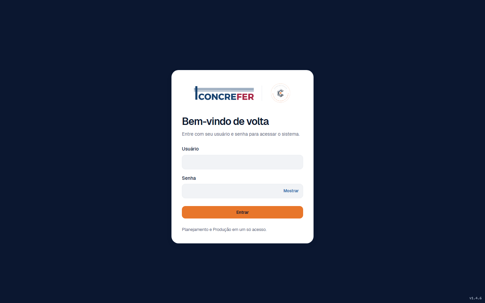
Proposta
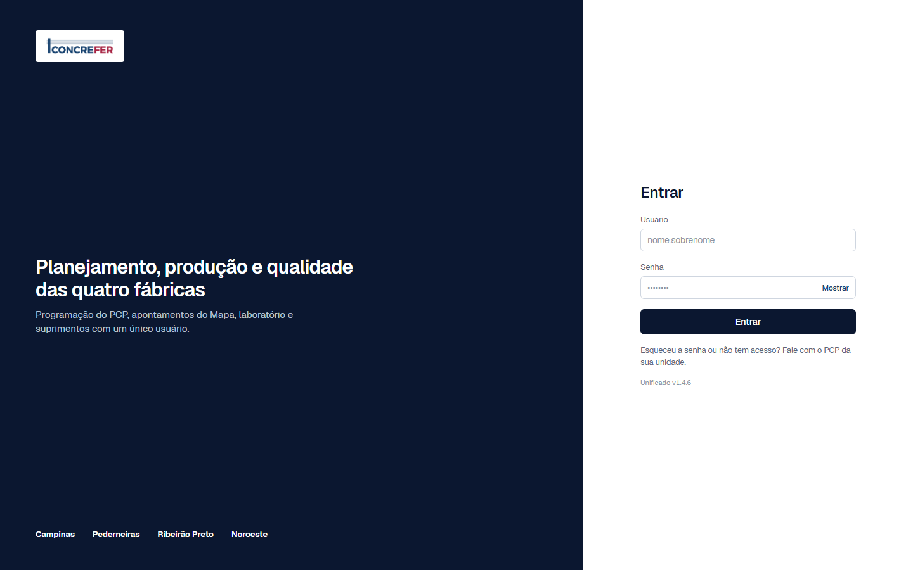
Tablet
No tablet, o menu lateral fica recolhido num trilho de ícones, o mesmo comportamento de hoje. A diferença é que cada módulo ganha um ícone de traço, em vez de sigla colorida. O conteúdo usa a mesma faixa de números, as mesmas tabelas e os mesmos botões do computador.
Captura "hoje" de Programação da semana é da v1.0.105 (29/10), de Suprimentos é de 26/10 e de Planejamento é de 09/11. O conteúdo das telas é o atual, mas o menu pode ter mudado desde então. O login mantém o visual de hoje, como decidido.
Página do módulo Planejamento · 1024 × 768, deitado
Hoje
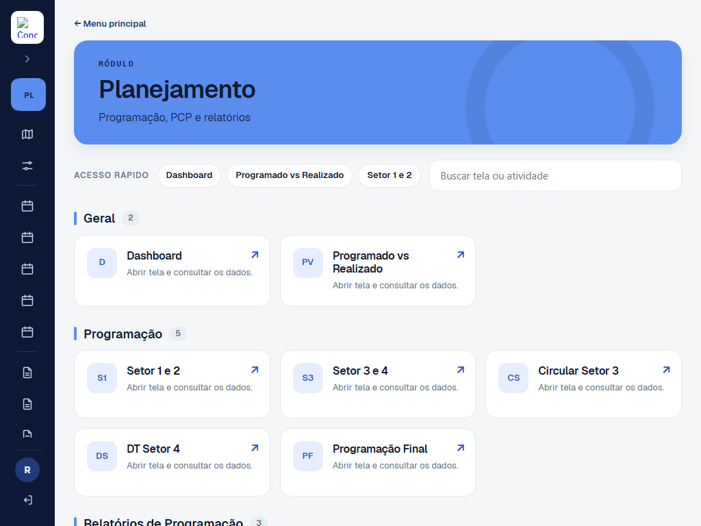
Proposta
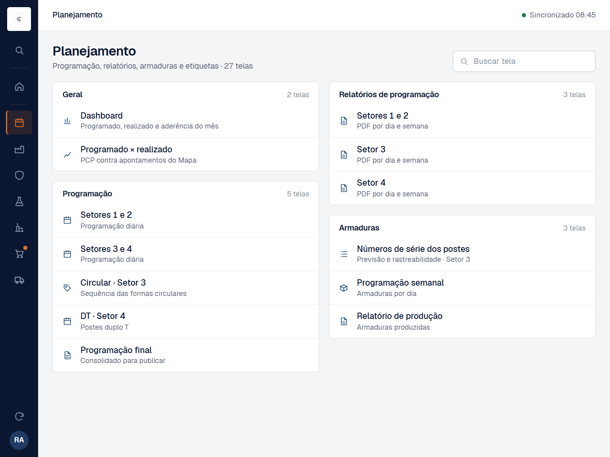
Faixa azul com círculo sai. A primeira tela já mostra 4 grupos e 13 telas, contra 7 cartões hoje.
Trilho com ícones de módulo. Hoje ele tem logo quebrado e 6 ícones de calendário iguais seguidos, um para cada tela.
Descrição real em cada tela. Some o "Abrir tela e consultar os dados." repetido.
Programação da semana · 1024 × 768, deitado
Hoje
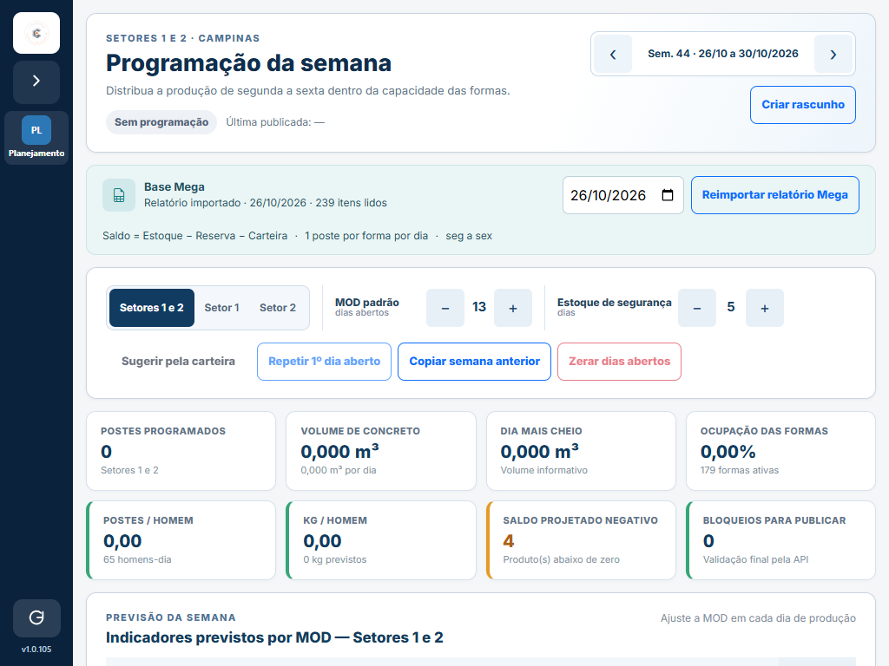
Proposta
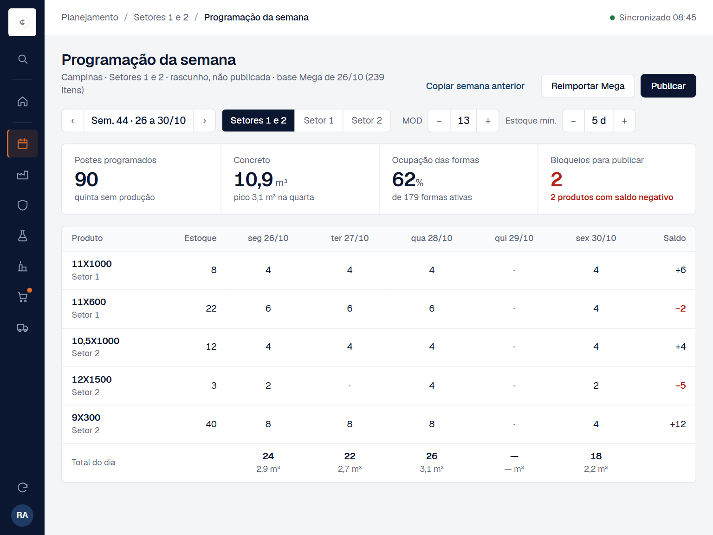
A grade da semana aparece sem rolar. Hoje a primeira tela inteira é cabeçalho, bloco da base Mega, controles e 8 indicadores, e a grade só começa abaixo da dobra.
Situação da base Mega em uma linha abaixo do título, em vez de um bloco verde-água.
Controles numa barra só: semana, setor, MOD e estoque mínimo.
8 indicadores viram 4. "Bloqueios para publicar" fica vermelho quando impede a publicação.
Três botões de borda colorida (Repetir, Copiar, Zerar) saem do meio da tela. "Copiar semana anterior" vai para o topo, e os outros para um menu.
Painel de suprimentos · 820 × 1180, em pé
Hoje
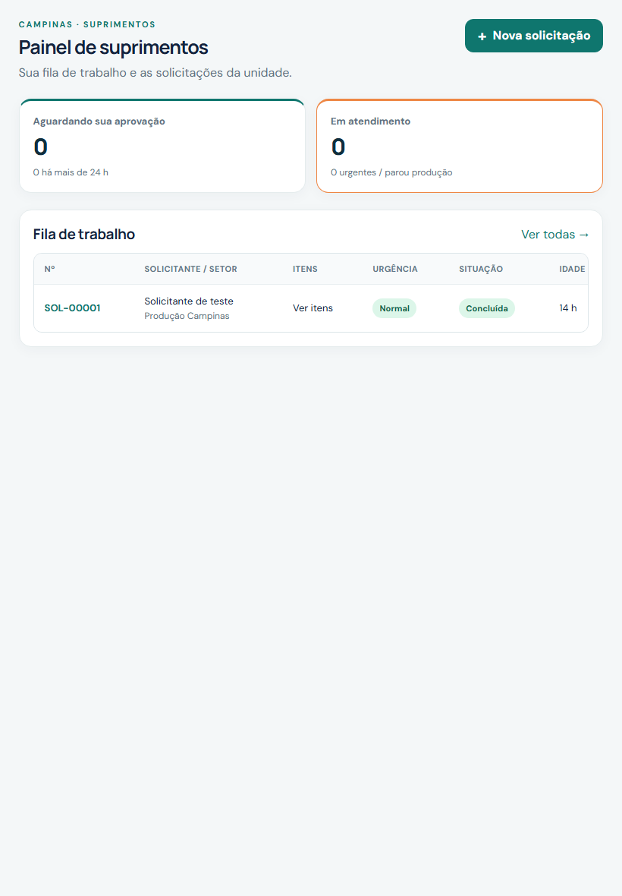
Proposta
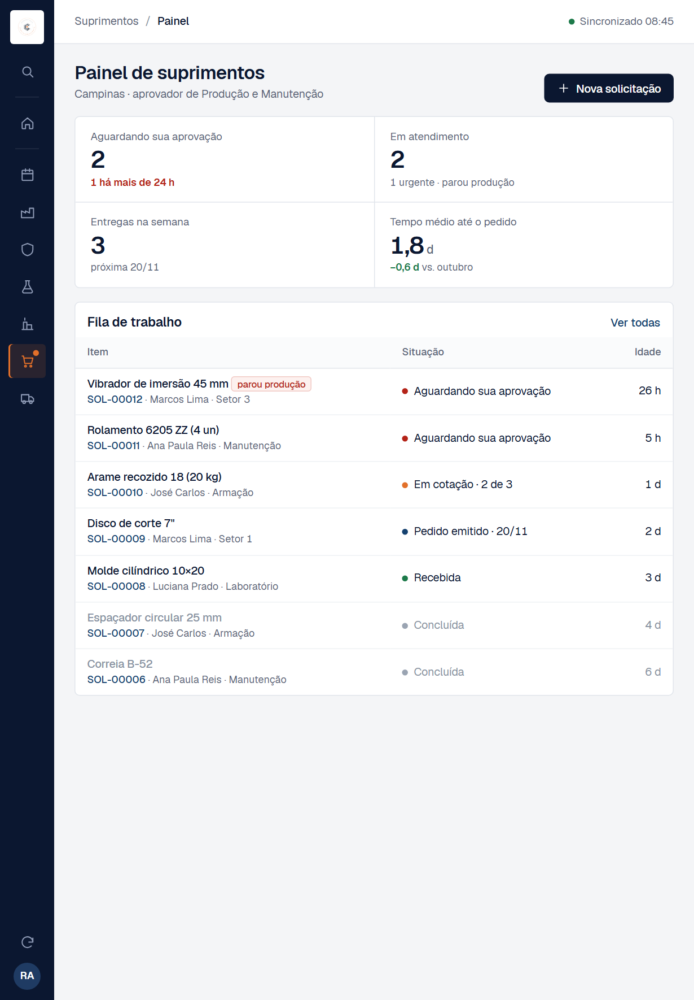
A tabela cabe na largura. Hoje a coluna Idade fica cortada. Na proposta, solicitante e número vão para baixo do item, e a tabela tem 3 colunas.
Indicadores sem barra colorida no topo. Viram uma faixa 2 × 2 com divisórias, e a segunda linha traz entregas e tempo médio.
Mesma fonte e mesmo botão do resto, sem o verde-petróleo.
Celular
O mesmo padrão em 390 px de largura. A navegação de baixo (Início, Telas, Recentes, Conta) é a da proposta. O que muda é o que fica em volta dela.
Atenção: as capturas "Hoje" de celular são de versões anteriores (1.0.58 a 1.2.9). A única exceção é o login, tirado do sistema publicado (v1.4.6). Na versão atual, o celular usa o menu lateral modelo A, e a barra de cima e a navegação de baixo destas capturas não são mais carregadas. Os dois problemas apontados abaixo (título "Início" e menu sobre o perfil) eram dessa navegação antiga.
A barra de cima diz onde você está. Hoje ela mostra "Unificado · Início" mesmo dentro de Números de série ou do Painel de suprimentos.
Tabelas largas viram listas. No celular, nenhuma tela rola para o lado.
O botão principal fica no fim da tela, perto do polegar, em vez de ser um bloco grande no topo.
A aba ativa da navegação de baixo ganha um traço laranja. Os ícones são do mesmo conjunto do resto do sistema.
Meu acesso rápido
Hoje
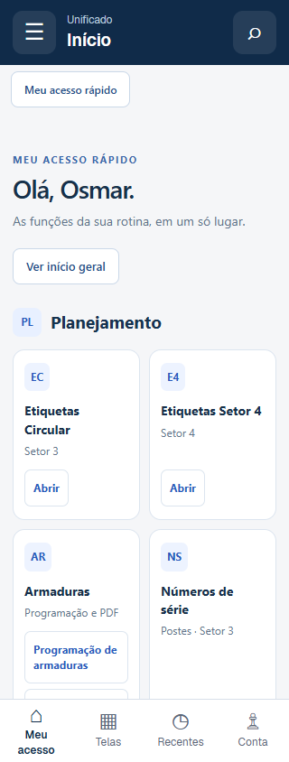
Proposta
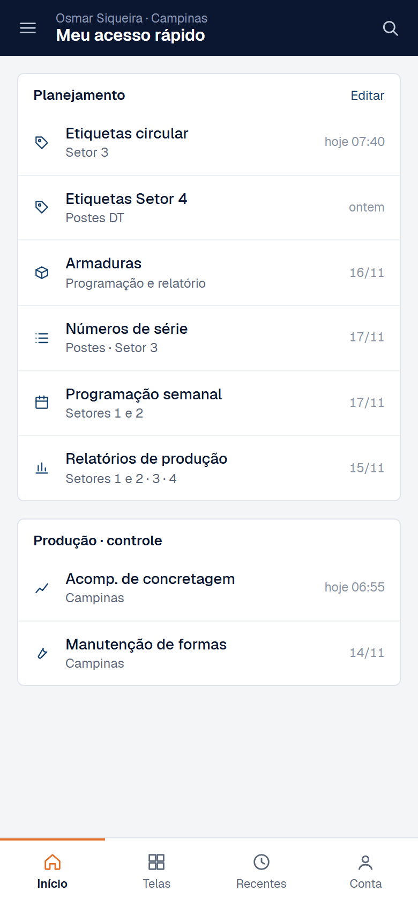
Hoje cabem 4 telas por tela de celular, em cartões com siglas e botão "Abrir". Na proposta cabem as 8 sem rolar.
Saem "MEU ACESSO RÁPIDO", "Olá, Osmar." e os dois botões soltos no topo.
Números de série
Hoje
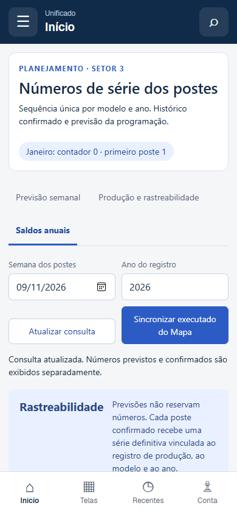
Proposta
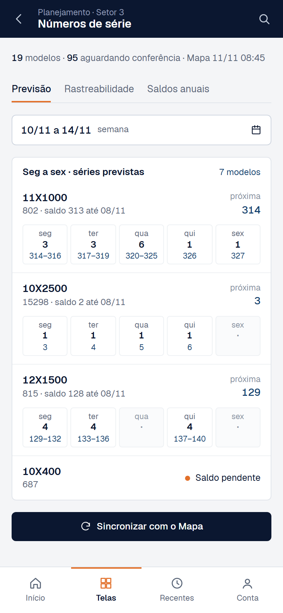
Hoje a primeira tela inteira é cabeçalho, abas quebradas em duas linhas, filtros e uma caixa azul. A tabela só aparece depois de rolar.
Na proposta, cada modelo vira um bloco com a próxima série e os 5 dias em quadradinhos.
Painel de suprimentos
Hoje
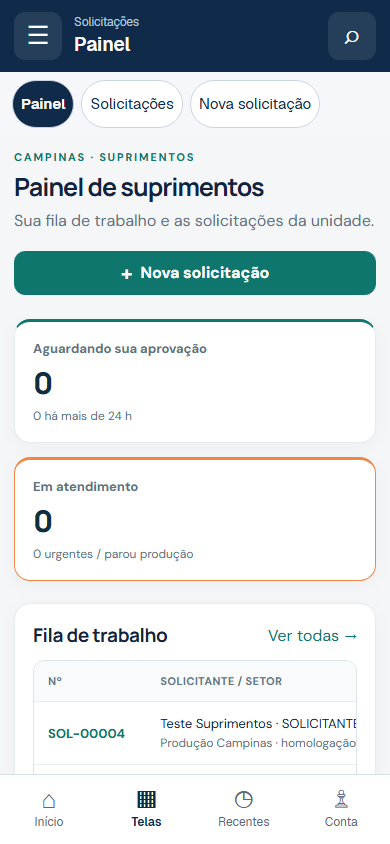
Proposta
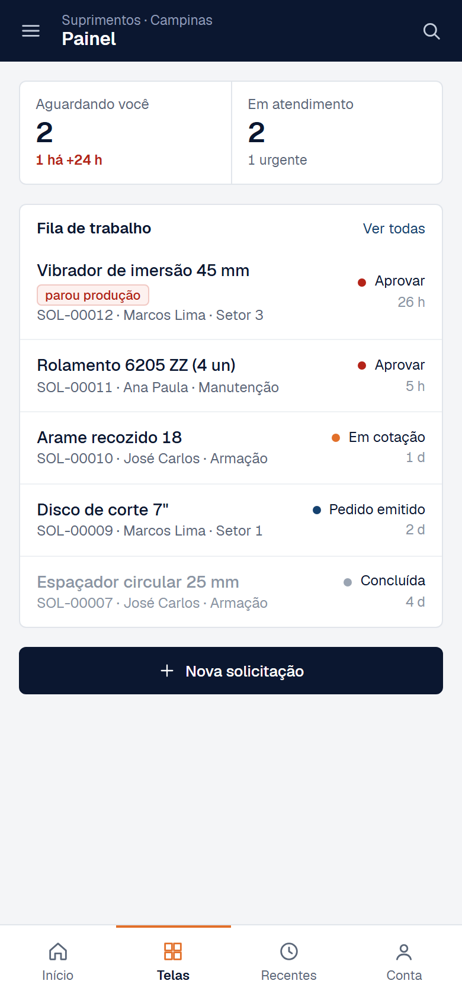
Hoje a tabela da fila fica cortada à direita, e os dois indicadores ocupam meia tela.
Na proposta: indicadores lado a lado, fila em lista com o item em destaque e a situação à direita.
Telas do módulo (Laboratório)
Hoje
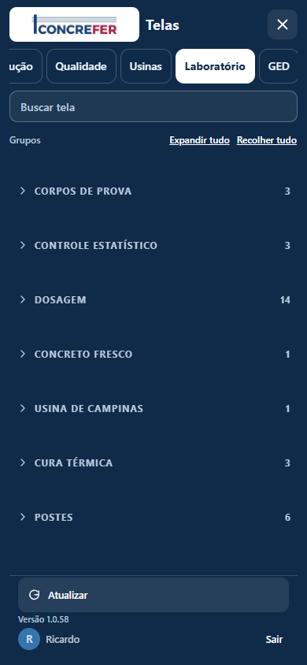
Proposta
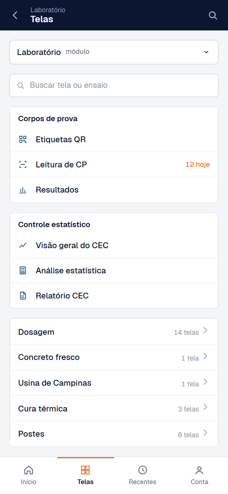
Hoje os módulos aparecem em pílulas cortadas na lateral ("ução", "GED"), e os 7 grupos vêm fechados, em caixa alta.
Na proposta, o módulo é escolhido num seletor, os grupos mais usados já vêm abertos e os outros mostram quantas telas têm.
Conta
Hoje
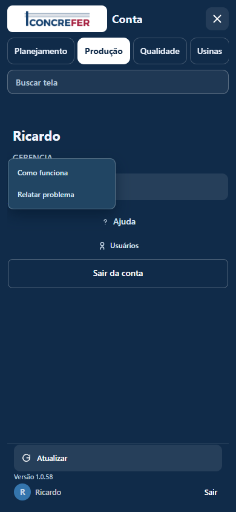
Proposta
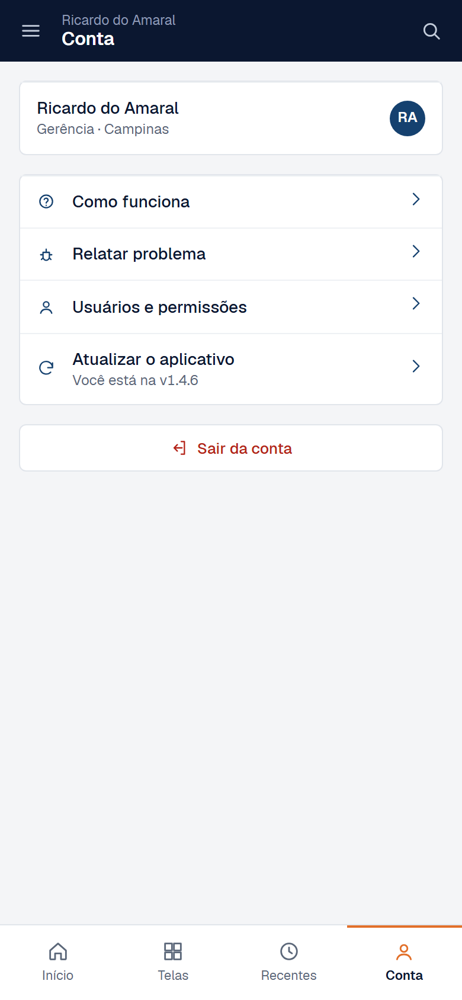
Hoje o menu "Como funciona / Relatar problema" abre por cima do perfil e esconde "GERENCIA". Isso é um bug visível na captura.
Na proposta, tudo vira uma lista simples, e "Sair da conta" fica separado e em vermelho.
Login · mantido como está
Hoje e proposta
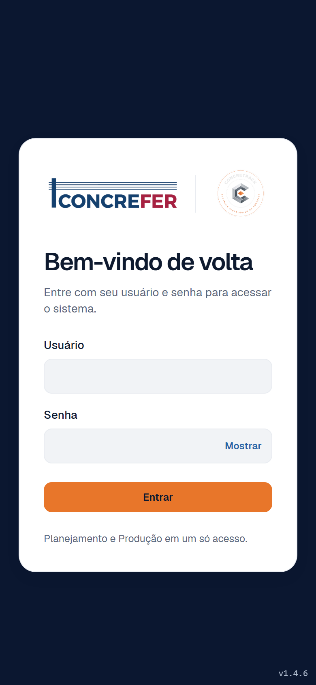
Decisão: o login atual fica igual no celular e no tablet. A proposta de login vale só para o computador.
As telas propostas são HTML estático em docs/revisao-visual-unificado/telas/, todas sobre um único base.css. Esse arquivo é o ponto de partida para o shell/tokens.css.Dados das propostas são ilustrativos. Nenhum arquivo do sistema foi alterado.